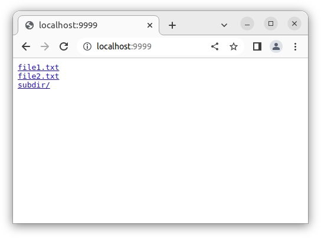
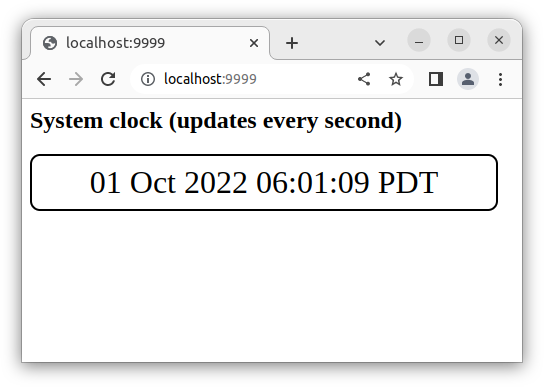

Go is a great language to write HTTP servers in, often using just the included batteries. This post shows a few examples of Go servers that serve static content. The examples range from a very simple purely static file server to a fairly complete web application bundled into a single Go program.
#1: Basic file server
For servers #1, #2 and #3, we'll assume that the following files directory tree is in the current working directory where the server is invoked:
$ tree files
files
├── file1.txt
├── file2.txt
└── subdir
└── file1.txt
(the full code for these servers, along with the sample directory, is available on GitHub)
A basic static server that serves files from the local filesystem is ridiculously simple to write in Go:
package main
import "net/http"
func main() {
port := ":9999"
handler := http.FileServer(http.Dir("files"))
http.ListenAndServe(port, handler)
}
This is it. Really! It serves the files directory at the root route of the server (/). If we run this server and open the browser to localhost:9999, we'll see the following:
When the server gets a request for a path that matches a directory, it serves a simple listing of the directory's contents; we can also observe this with curl:
$ curl localhost:9999/
<pre>
<a href="file1.txt">file1.txt</a>
<a href="file2.txt">file2.txt</a>
<a href="subdir/">subdir/</a>
</pre>
When it gets a request for a path matching a file, it serves that file (while trying to provide the right HTTP MIME type based on the file's contents):
$ curl localhost:9999/file2.txt
hello in file 2
Check out my static-server project for this functionality shrink-wrapped in a Go command you can install or run with a single shell line.
#2: Serving files on a different route
The default FileServer serves filesystem contents on the root route /. But what if that's not what we want; suppose we want to serve them with some prefix, like localhost:9999/static? We can set up a handler for that path with:
http.Handle("/static/", handler)
http.ListenAndServe(port, nil)
Unfortunately, this will not work out of the box, because the FileServer will get requests for files like static/file2.txt, but there's no local directory called static. To address this use case, the http package provides the StripPrefix function. It's an interesting example of middleware, since it wraps an HTTP handler and returns another handler that adjusts its behavior. The complete server using this approach is:
package main
import "net/http"
func main() {
port := ":9999"
handler := http.StripPrefix("/static/", http.FileServer(http.Dir("files")))
http.Handle("/static/", handler)
http.ListenAndServe(port, nil)
}
What happens here is that we serve the contents of the files directory in the static/ route, but use StripPrefix to remove the actual static/ prefix from requests made to the file server. So all requests to localhost:9999/static/<somepath> will actually be sent as <somepath> to the FileServer serving from files, and all is well. Here's a sample curl interaction with this server:
$ curl localhost:9999/static/file2.txt
hello in file 2
$ curl localhost:9999/static/subdir/
<pre>
<a href="file1.txt">file1.txt</a>
</pre>
#3: Static and dynamic content
So far the servers we've seen only serve "static" filesystem content, and FileServer takes over the entire HTTP routing in the server.
But it's also fairly simple to combine serving static content with dynamic content - where a Go function responds to HTTP requests programmatically. This is our third sample server:
package main
import (
"fmt"
"net/http"
"time"
)
func timeHandler(w http.ResponseWriter, r *http.Request) {
fmt.Fprint(w, time.Now().Format("02 Jan 2006 15:04:05 MST"))
}
func main() {
port := ":9999"
fileHandler := http.StripPrefix("/static/", http.FileServer(http.Dir("files")))
http.Handle("/static/", fileHandler)
http.HandleFunc("/time", timeHandler)
http.ListenAndServe(port, nil)
}
In addition to serving the files folder in the /static/ route, this server also responds dynamically to /time; this is served from our timeHandler function and provides the current server time.
$ curl localhost:9999/time
27 Sep 2022 18:21:30 PDT
$ curl localhost:9999/static/subdir/
<pre>
<a href="file1.txt">file1.txt</a>
</pre>
$ curl localhost:9999/time
27 Sep 2022 18:21:39 PDT
#4: Serving a complete web application
A dynamic web application typically consists of a server component and a client component. The client component is a mix of HTML, CSS and JavaScript files typically served from the server's filesystem and interpreted by the user's browser. The server component is any number of functions responding to specific HTTP routes for the JS in the client to communicate with.
The previous example gives us all the foundations we need to serve a complete web application from Go; the full code for this sample is here.
Our application has the following file structure:
$ tree
.
├── go.mod
├── public
│ ├── css
│ │ └── style.css
│ ├── index.html
│ └── js
│ └── timescript.js
└── server.go
The server component is in server.go; the client component is in the public directory (it's called "public" because it's visible to the users in their browser via "View page source", dev tools etc.)
Here's the complete server:
package main
import (
"fmt"
"log"
"net/http"
"time"
)
func timeHandler(w http.ResponseWriter, r *http.Request) {
fmt.Fprint(w, time.Now().Format("02 Jan 2006 15:04:05 MST"))
}
func main() {
http.HandleFunc("/time", timeHandler)
http.Handle("/", http.FileServer(http.Dir("public/")))
port := ":9999"
log.Fatal(http.ListenAndServe(port, nil))
}
It does two things:
- Serves the client side of the application from the file system in the root route /.
- Serves a dynamic server function providing the current time on the /time route.
The HTML is:
<html>
<head>
<link rel="stylesheet" type="text/css" href="/css/style.css">
</head>
<body>
<h2>System clock (updates every second)</h2>
<div id="output"></div>
<script src="/js/timescript.js"></script>
</body>
</html>
And the JS code is:
let outputBox = document.querySelector('#output');
window.addEventListener('DOMContentLoaded', (event) => {
outputBox.innerHTML = "initializing...";
tick();
setInterval(tick, 1000);
});
function tick() {
fetch('/time')
.then((response) => {
if (!response.ok) {
throw new Error("error response");
}
return response.text();
})
.then((text) => {
outputBox.innerHTML = text;
})
.catch((error) => {
outputBox.innerHTML = "network error";
});
}
As you can see, it uses the fetch API to communicate with the server (in the past this would be called an "AJAX request"). It sets an interval to send a request to the server's /time route every second, and updates the UI with the new time.
If we run the server locally and open a browser to localhost:9999, we'll see:
This is a single screenshot - if you run the server you'll actually see the clock "ticking" by updating its time every second.
#5: Embedding static content into the server's binary
The previous sample shows how to run a complete web application from a Go server. There's just one snag. When the server is run, it expects to find the public directory in the current working directory, so the two have to be shipped around together (even when the server is built to be a binary). Wouldn't it be nice if we could avoid this hassle and have everything we need stuffed into the server's binary, so it would be the only thing for us to carry around?
With Go's embed package, this turns out to be very simple! In this sample (full code), the directory structure remains the same, as do all the files in the public directory. The only change is in the server code, and it's a small one:
package main
import (
"embed"
"fmt"
"io/fs"
"log"
"net/http"
"time"
)
//go:embed public
var public embed.FS
func timeHandler(w http.ResponseWriter, r *http.Request) {
fmt.Fprint(w, time.Now().Format("02 Jan 2006 15:04:05 MST"))
}
func main() {
// We want to serve static content from the root of the 'public' directory,
// but go:embed will create a FS where all the paths start with 'public/...'.
// Using fs.Sub we "cd" into 'public' and can serve files relative to it.
publicFS, err := fs.Sub(public, "public")
if err != nil {
log.Fatal(err)
}
http.HandleFunc("/time", timeHandler)
http.Handle("/", http.FileServer(http.FS(publicFS)))
port := ":9999"
log.Fatal(http.ListenAndServe(port, nil))
}
Instead of serving the local filesystem on the / route, we instead embed the public directory into our binary and use Go's virtual filesystem adapter to serve it. This server behaves similarly to the previous one, but it does not require the public directory to be next to its binary any more - this directory is instead embedded into the binary. It still needs to be on disk when the binary is built, of course, but not when it's run. So we've built a complete web application into a single Go binary.
#6: Streaming the client code directly from the server
For completeness, I want to demonstrate yet another technique to run the same web application we've covered in the previous two samples. We can also stream all the client code directly from a server's handler, without having anything in separate files. The full sample code is here, here's an excerpt:
package main
import (
"fmt"
"log"
"net/http"
"strings"
"time"
)
var page = `
<html>
<head>
// ...
// ... the rest of our HTML, CSS and JS code
// ...
</body>
</html>
`
func rootHandler(w http.ResponseWriter, r *http.Request) {
// The root handler "/" matches every path that wasn't match by other
// matchers, so we have to further filter it here. Only accept actual root
// paths.
if path := strings.Trim(r.URL.Path, "/"); len(path) > 0 {
http.NotFound(w, r)
return
}
fmt.Fprint(w, page)
}
func timeHandler(w http.ResponseWriter, r *http.Request) {
fmt.Fprint(w, time.Now().Format("02 Jan 2006 15:04:05 MST"))
}
func main() {
http.HandleFunc("/time", timeHandler)
http.HandleFunc("/", rootHandler)
port := ":9999"
log.Fatal(http.ListenAndServe(port, nil))
}
Here we don't use a static server component at all, but rather dump the entire HTML+CSS+JS back in a HTTP response to the / route.
I'm showing this sample for completeness; I don't actually think it's a great idea to structure web applications in Go, but who knows - this could be useful in some scenarios. For anything non-trivial, I would recommend the embedding approach outlined in #5.
#7: Injecting custom headers using middleware
Sometimes we need to inject custom headers into our HTTP responses when serving static files; for example, we may want to enable CORS for our front-end. This is easy to accomplish in Go using middleware. Here's the very first - basic - file server with CORS headers enabled on every response:
package main
import "net/http"
func addCORS(next http.Handler) http.Handler {
return http.HandlerFunc(func(w http.ResponseWriter, req *http.Request) {
w.Header().Set("Cross-Origin-Embedder-Policy", "require-corp")
w.Header().Set("Cross-Origin-Opener-Policy", "same-origin")
next.ServeHTTP(w, req)
})
}
func main() {
port := ":9999"
handler := addCORS(http.FileServer(http.Dir("files")))
http.ListenAndServe(port, handler)
}
Because in Go http.Handlers are composable, middleware is easy to write using higher-order functions. addCORS wraps the given HTTP handler (in this case http.FileServer) such that some headers are added to every response.